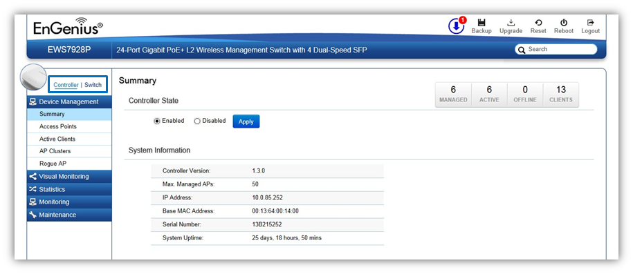

Using the EWS Switch
Besides the functions of a Wireless Controller, the EWS Wireless Management Switch also possesses functions of a full-featured Layer 2 PoE switch. Use the Controller / Switch tab on the upper left corner of the user interface to toggle between the Wireless Controller or Layer 2 Switch functions.

Created with the Personal Edition of HelpNDoc: Easy EPub and documentation editor